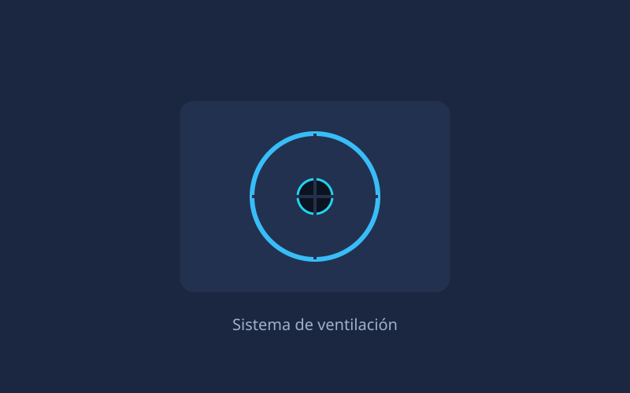

Inicio/MiniForge M1

Gama multimedia · gaming ligero
MiniForge M1
Ryzen 7 7840HS con gráficos Radeon 780M. Mueve juegos a 1080p con calidad media y acelera cualquier tarea de edición o renderizado.
Especificaciones técnicas
Configuración de referencia. Disponible en negro mate y blanco.
| Procesador | AMD Ryzen 7 7840HS (8 núcleos, 16 hilos, hasta 5,1 GHz) |
|---|---|
| Gráficos | AMD Radeon 780M (12 CU, RDNA 3) |
| Memoria RAM | 32 GB DDR5-5600 SO-DIMM (2 ranuras, máx. 64 GB) |
| Almacenamiento | 1 TB SSD NVMe PCIe 4.0 (2 slots M.2 2280) |
| Vídeo | 1 × HDMI 2.1 + 1 × DisplayPort 1.4 + 1 × USB4 (DP Alt Mode) |
| Puertos USB | 3 × USB-A 3.2 Gen2, 1 × USB-A 2.0, 1 × USB4 Type-C |
| Red | Ethernet 2.5 GbE · Wi-Fi 6E · Bluetooth 5.2 |
| Audio | Jack 3,5 mm, salida óptica S/PDIF, audio por HDMI/DP |
| Dimensiones | 130 × 130 × 55 mm · 0,93 litros |
| Peso | 780 g |
| Alimentación | Fuente externa 120 W · consumo típico 18 W |
| Soporte VESA | Incluido (75 × 75 mm y 100 × 100 mm) |
| Garantía | 3 años |
Puntos destacados
- Gráficos Radeon 780M: gaming 1080p fluido sin GPU dedicada.
- Modo rendimiento con TDP configurable de 35 W a 65 W.
- Salida de vídeo triple simultánea (HDMI + DP + USB4).
- Chasis con rejilla metálica y filtro antipolvo desmontable.
- Compatible con memoria DDR5-5600 de serie, sin overclocking.
Galería
Imágenes de ejemplo del chasis y los detalles internos.

